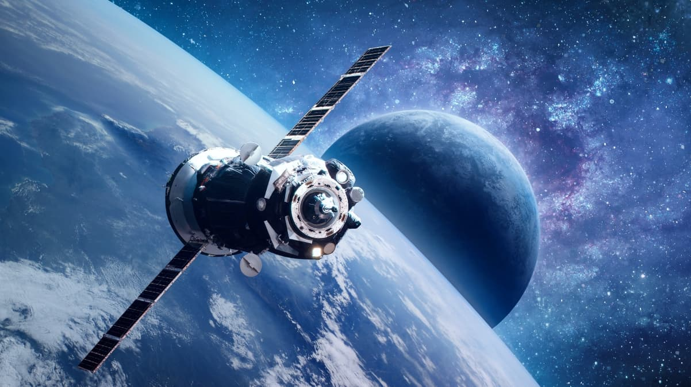

Histórico:A jornada humana rumo ao cosmos divide-se em três grandes eras:A Corrida Espacial (1955–1975): Nascida no auge da Guerra Fria, foi uma disputa tecnológica e de propaganda entre as duas superpotências da época: a União Soviética (URSS) e os Estados Unidos (EUA).Em 1957, a URSS chocou o mundo ao lançar o Sputnik 1, o primeiro satélite artificial, seguido pela cadela Laika.Em 1961, o soviético Yuri Gagarin tornou-se o primeiro humano no espaço.Em resposta, os EUA criaram o Programa Apollo e, em 20 de julho de 1969, a missão Apollo 11 pousou na Lua, onde Neil Armstrong e Buzz Aldrin tornaram-se os primeiros homens a caminhar em outro corpo celeste.A Era da Cooperação (1975–2010): Com o fim da Guerra Fria, o foco mudou de disputa para colaboração. O maior símbolo desse período foi a construção da Estação Espacial Internacional (ISS), iniciada em 1998, um laboratório orbital habitado continuamente por astronautas de diversos países. Também foi a era dos Ônibus Espaciais americanos, criados para carregar grandes cargas ao espaço.A Era do NewSpace (2010–Presente): É o momento em que vivemos hoje, caracterizado pela entrada forte de empresas privadas e comerciais no setor aeroespacial, mudando as regras do jogo.
Métodos:Para explorar o universo, a ciência utiliza quatro abordagens principais:Exploração Robótica e Sondas: Robôs e naves não tripuladas viajam para locais perigosos demais para humanos. Exemplos icônicos incluem os rovers Curiosity e Perseverance, que buscam sinais de vida antiga no solo de Marte, e as sondas Voyager, que já cruzaram os limites do nosso Sistema Solar.Telescópios Espaciais: Instrumentos colocados fora da atmosfera da Terra para enxergar o cosmos sem a distorção do ar. O Telescópio Espacial Hubble revolucionou a ciência nos anos 1990, e hoje o James Webb (JWST) consegue detectar a luz das primeiras galáxias formadas após o Big Bang.Satélites Artificiais: Equipamentos em órbita da Terra voltados para telecomunicações, GPS, previsão do tempo e monitoramento do desmatamento e das mudanças climáticas.Missões Tripuladas: Envio de astronautas ao espaço para realizar experimentos científicos complexos em ambientes de microgravidade (como na ISS). O maior desafio desse método é biológico: proteger o corpo humano da radiação cósmica e da perda de massa óssea causada pela falta de gravidade.
Cenário Atual:O cenário contemporâneo da exploração espacial é o mais dinâmico da história:Privatização e Foguetes Reutilizáveis: Empresas como a SpaceX (de Elon Musk) e a Blue Origin (de Jeff Bezos) revolucionaram o mercado ao criar foguetes cujos propulsores voltam e pousam sozinhos na Terra. Isso reduziu drasticamente o custo de lançamento de cargas e satélites.O Programa Artemis: Liderado pela NASA com parceiros internacionais, este programa tem como objetivo trazer a humanidade de volta à Lua, incluindo a primeira mulher e a primeira pessoa negra a pisar no solo lunar. O plano não é apenas visitar, mas construir uma base sustentável permanente na superfície lunar e uma estação na órbita da Lua (a Lunar Gateway).Turismo Espacial: Viagens espaciais deixaram de ser exclusivas de astronautas do governo. Civis ricos agora podem comprar assentos para voos suborbitais ou estadias curtas na ISS.Rumo a Marte: A Lua agora serve como um "campo de testes". O objetivo final do cenário atual é desenvolver tecnologias de suporte à vida e combustíveis para realizar a primeira missão tripulada humana para Marte, uma viagem que leva entre 6 e 9 meses apenas para ir.
